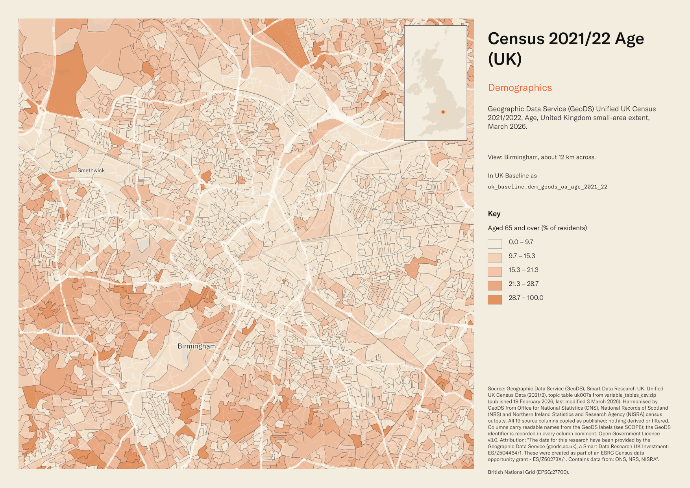
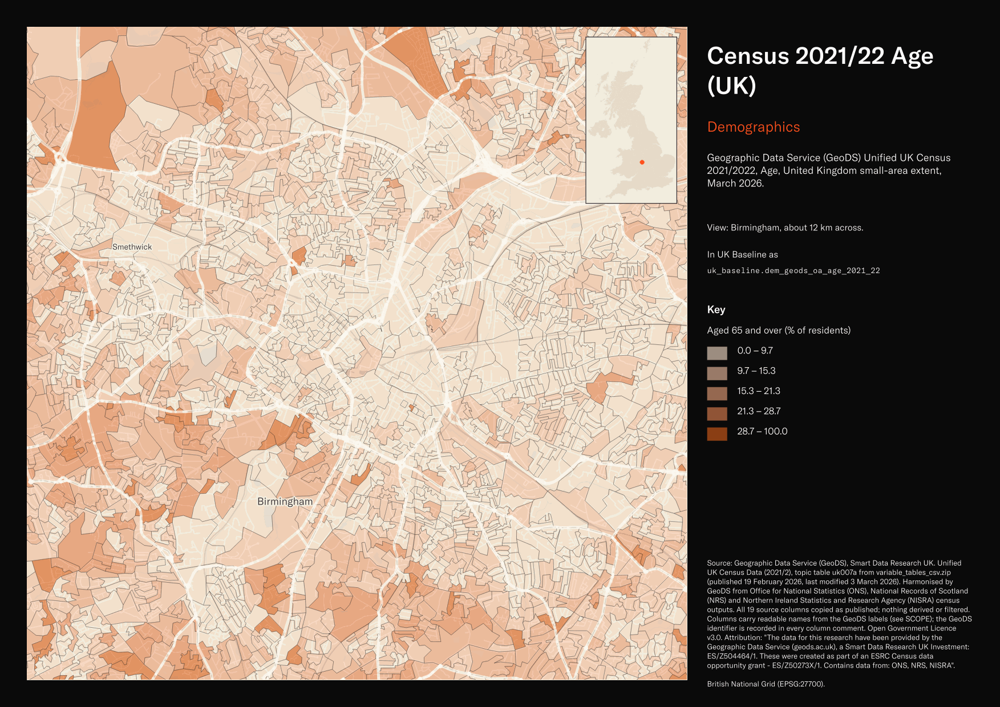

Geographic Data Service (GeoDS) Unified UK Census 2021/2022, Age, United Kingdom small-area extent, March 2026¶
Census 2021/22 Age (UK)
dem_geods_oa_age_2021_22


SOURCE
- Geographic Data Service (GeoDS), Smart Data Research UK. Unified UK Census Data (2021/2), topic table uk007a from variable_tables_csv.zip (published 19 February 2026, last modified 3 March 2026). Harmonised by GeoDS from Office for National Statistics (ONS), National Records of Scotland (NRS) and Northern Ireland Statistics and Research Agency (NISRA) census outputs. All 19 source columns copied as published; nothing derived or filtered. Columns carry readable names from the GeoDS labels (see SCOPE); the GeoDS identifier is recorded in every column comment.
DOCUMENTATION
- Dataset page : https://data.geods.ac.uk/dataset/unified-uk-census-data
- Method paper (Goodwin and Singleton) : https://doi.org/10.1177/23998083261429563
- Source code : https://github.com/GeographicDataService/unified-uk-census-2021-22
- Variable Metadata and Table Notes files : shipped with the download; local copy on the G: source folder 260902_GeoDS_Unified UK Census 2021-22.
DEFINITIONS
- "The Unified UK Census Dataset (2021/2022) is a harmonised, small-area dataset that brings together census data from the three UK census agencies -- ONS (England & Wales), NRS (Scotland), and NISRA (Northern Ireland) -- into a single, comparable release." (GeoDS dataset page)
- "The dataset available for download contains the counts for all 190 variables plus 25 table totals (215 variables in total) across each of the 239,023 small-area geographies. Data Zones are relabelled as "OA" in the dataset for consistency." (GeoDS dataset page)
- Table unit: "Person". Population scope: "All Persons". (GeoDS Table Notes)
- Census Day: "21 March 2021 for England, Wales, and Northern Ireland, and 20 March 2022 for Scotland." (GeoDS dataset page)
SCOPE
- United Kingdom. 239,023 rows, one per small area: England 178,605; Wales 10,275; Scotland 46,363; Northern Ireland 3,780. Codes are Output Area 2021 (E00, W00), Output Area 2022 (S00) and Data Zone 2021 (N20).
- Counts only;
total(GeoDS uk007a001) is the table total. No percentages are supplied by the publisher and none were computed. - Column names are readable forms of the GeoDS labels, signed off by the data manager on 2 September 2026; each column comment names the GeoDS source identifier. Mapping: scripts/unified_census/column_names.py.
- Sibling of the other 24 GeoDS Unified UK Census tables named dem_geods_oa_*_2021_22.
CRS
- EPSG:27700 (OSGB 1936 / British National Grid). Geometry from uk_baseline.adm_ons_oa_boundaries_dec2021 (England and Wales, Output Area 2021), uk_baseline.adm_nrs_oa_boundary_2022 (Scotland, Output Area 2022) and uk_baseline.adm_nisra_dz_boundary_2021 (Northern Ireland, Data Zone 2021), joined at load on the row's code.
LICENCE
- Open Government Licence v3.0. Attribution: "The data for this research have been provided by the Geographic Data Service (geods.ac.uk), a Smart Data Research UK Investment: ES/Z504464/1. These were created as part of an ESRC Census data opportunity grant - ES/Z50273X/1. Contains data from: ONS, NRS, NISRA"
DATA QUALITY CAVEATS
- "The Scottish census was conducted one year later than the rest of the UK (2022 vs 2021), which may introduce temporal differences in some variables." (GeoDS dataset page)
- "The data are compiled from the official census releases of the three UK statistical agencies, each of which applies its own disclosure control and data quality procedures." (GeoDS dataset page)
- Northern Ireland geometry was reprojected from Irish Grid with about 3 m accuracy; see uk_baseline.adm_nisra_dz_boundary_2021.
- 9 Scottish polygons (S00136407, S00136544, S00138851, S00142130, S00148144, S00162192, S00176070, S00177785, S00181661) were published with a ring touching itself at one vertex and were repaired on 2 September 2026 with the data manager's approval; no change in area.
- Geography coverage by nation: lad22/lad25 filled on all 239,023 rows; msoa21cd/msoa21nm/msoa21hclnm and ctyua25 filled on the 188,880 England and Wales rows only; iz22 on the 46,363 Scotland rows only; sdz21* on the 3,780 Northern Ireland rows only; sds_name/sds_group on 178,596 England rows (NULL for Wales, Scotland, Northern Ireland and 9 Isles of Scilly Output Areas).
ENRICHMENT
- Route attr_join on
oa, applied 2 September 2026 through the uk_new staging schema. England and Wales rows carry Output Area 2021 codes, which nest wholly within LSOA 2021 and MSOA 2021, so the join is exact rather than best-fit; all eleven geography columns were copied from uk_baseline.adm_ons_oa_boundaries_dec2021 (itself enriched 5 August 2026: MSOA 2021 via the ONS 2021 output-area hierarchy, Local Authority District 2022 and 2025, county or unitary authority 2025 and Spatial Development Strategy via uk.ref_lad25_ctyua25_sds_lu_jul2026). Row count unchanged at 239,023. No numeric value was changed, recomputed or apportioned. - Scotland (Output Area 2022) and Northern Ireland (Data Zone 2021) rows, 50,143 in all, have no MSOA, county or Spatial Development Strategy in this scheme and are NULL in those columns; their Local Authority District columns were filled on 3 September 2026 (next bullet). Wales carries a county but no SDS.
- Scotland and Northern Ireland geography, added 3 September 2026 through the uk_new staging schema (route attr_join, data manager decision to keep the nations' own units in their own columns):
iz22cd/iz22nmhold the Intermediate Zone 2022 for the 46,363 Scottish rows, code from the NRS Census 2022 Output Area to Data Zone and Intermediate Zone lookup (uk.ref_oa22_dz22_iz22_lu_dec2024) and name from uk_baseline.adm_sg_iz_boundary_2022;sdz21cd/sdz21nmhold the Super Data Zone 2021 for the 3,780 Northern Ireland rows, from uk_baseline.adm_nisra_dz_boundary_2021.lad22cd/lad22nmandlad25cd/lad25nmwere filled for Scotland from the NRScouncilcode and for Northern Ireland from the NISRAlgd2014_cdcode, names from uk_baseline.adm_ons_lad_boundary_may2022 and _may2025 (the Office for National Statistics local authority district geography is UK-wide, so these are the same geography, not an equivalent). Row count unchanged at 239,023; no numeric value changed. - Intermediate Zones (2,500 to 6,000 household residents) and Super Data Zones (about 2,240 people) are each nation's next level above the small area; they are not the same size as an MSOA (5,000 to 15,000 people) and must not be compared with MSOA figures as like for like.
msoa21cd,msoa21nm,msoa21hclnm,ctyua25cd,ctyua25nm,sds_nameandsds_groupremain NULL outside England and Wales because those geographies and classifications do not exist there (Wales has a county but no SDS).
LOADED INTO uk_baseline
- Loaded by PNC, 2 September 2026.
Columns¶
| Column | Type | Description / unit |
|---|---|---|
fid |
integer |
|
oa |
character varying(9) |
Source field OA; small-area code: "OA21CD (England/Wales), OA22CD (Scotland), DZ21CD (Northern Ireland)" (GeoDS). Northern Ireland Data Zones are labelled OA by the publisher. |
total |
integer |
Source field uk007a001; "Age: Total". Unit: "Person". Column renamed from the GeoDS identifier on 2 September 2026 (data manager sign-off). |
aged_ |
integer |
Source field uk007a002; "Age: Aged 4 years and under". Unit: "Person". Column renamed from the GeoDS identifier on 2 September 2026 (data manager sign-off). |
aged_ |
integer |
Source field uk007a003; "Age: Aged 5 to 9 years". Unit: "Person". Column renamed from the GeoDS identifier on 2 September 2026 (data manager sign-off). |
aged_ |
integer |
Source field uk007a004; "Age: Aged 10 to 14 years". Unit: "Person". Column renamed from the GeoDS identifier on 2 September 2026 (data manager sign-off). |
aged_ |
integer |
Source field uk007a005; "Age: Aged 15 to 19 years". Unit: "Person". Column renamed from the GeoDS identifier on 2 September 2026 (data manager sign-off). |
aged_ |
integer |
Source field uk007a006; "Age: Aged 20 to 24 years". Unit: "Person". Column renamed from the GeoDS identifier on 2 September 2026 (data manager sign-off). |
aged_ |
integer |
Source field uk007a007; "Age: Aged 25 to 29 years". Unit: "Person". Column renamed from the GeoDS identifier on 2 September 2026 (data manager sign-off). |
aged_ |
integer |
Source field uk007a008; "Age: Aged 30 to 34 years". Unit: "Person". Column renamed from the GeoDS identifier on 2 September 2026 (data manager sign-off). |
aged_ |
integer |
Source field uk007a009; "Age: Aged 35 to 39 years". Unit: "Person". Column renamed from the GeoDS identifier on 2 September 2026 (data manager sign-off). |
aged_ |
integer |
Source field uk007a010; "Age: Aged 40 to 44 years". Unit: "Person". Column renamed from the GeoDS identifier on 2 September 2026 (data manager sign-off). |
aged_ |
integer |
Source field uk007a011; "Age: Aged 45 to 49 years". Unit: "Person". Column renamed from the GeoDS identifier on 2 September 2026 (data manager sign-off). |
aged_ |
integer |
Source field uk007a012; "Age: Aged 50 to 54 years". Unit: "Person". Column renamed from the GeoDS identifier on 2 September 2026 (data manager sign-off). |
aged_ |
integer |
Source field uk007a013; "Age: Aged 55 to 59 years". Unit: "Person". Column renamed from the GeoDS identifier on 2 September 2026 (data manager sign-off). |
aged_ |
integer |
Source field uk007a014; "Age: Aged 60 to 64 years". Unit: "Person". Column renamed from the GeoDS identifier on 2 September 2026 (data manager sign-off). |
aged_ |
integer |
Source field uk007a015; "Age: Aged 65 to 69 years". Unit: "Person". Column renamed from the GeoDS identifier on 2 September 2026 (data manager sign-off). |
aged_ |
integer |
Source field uk007a016; "Age: Aged 70 to 74 years". Unit: "Person". Column renamed from the GeoDS identifier on 2 September 2026 (data manager sign-off). |
aged_ |
integer |
Source field uk007a017; "Age: Aged 75 to 79 years". Unit: "Person". Column renamed from the GeoDS identifier on 2 September 2026 (data manager sign-off). |
aged_ |
integer |
Source field uk007a018; "Age: Aged 80 to 84 years". Unit: "Person". Column renamed from the GeoDS identifier on 2 September 2026 (data manager sign-off). |
aged_ |
integer |
Source field uk007a019; "Age: Aged 85 years and over". Unit: "Person". Column renamed from the GeoDS identifier on 2 September 2026 (data manager sign-off). |
geom |
geometry( |
Geometry from uk_baseline.adm_ons_oa_boundaries_dec2021 (England and Wales, Output Area 2021), uk_baseline.adm_nrs_oa_boundary_2022 (Scotland, Output Area 2022) and uk_baseline.adm_nisra_dz_boundary_2021 (Northern Ireland, Data Zone 2021), joined at load on the row's code. |
msoa21cd |
character varying(9) |
Middle Layer Super Output Area (MSOA) 2021 code of the row's Lower Layer Super Output Area (LSOA); LSOAs nest wholly within MSOAs. Joined at load on lsoa21cd via uk_baseline.adm_ons_lsoa_boundary_2021, then uk_baseline.adm_ons_msoa_boundary_2021. Open Government Licence v3.0. Copied at load from uk_baseline.adm_ons_oa_boundaries_dec2021 on oa (Output Area 2021 code); NULL for every Scotland and Northern Ireland row. |
msoa21nm |
text |
Official Office for National Statistics MSOA 2021 name of the row's Lower Layer Super Output Area (LSOA); LSOAs nest wholly within MSOAs. Joined at load on lsoa21cd via uk_baseline.adm_ons_lsoa_boundary_2021, then uk_baseline.adm_ons_msoa_boundary_2021. Open Government Licence v3.0. Copied at load from uk_baseline.adm_ons_oa_boundaries_dec2021 on oa (Output Area 2021 code); NULL for every Scotland and Northern Ireland row. |
msoa21hclnm |
text |
House of Commons Library readable MSOA name of the row's Lower Layer Super Output Area (LSOA); LSOAs nest wholly within MSOAs. Joined at load on lsoa21cd via uk_baseline.adm_ons_lsoa_boundary_2021, then uk_baseline.adm_ons_msoa_boundary_2021, which carries the House of Commons Library name. Open Parliament Licence. Copied at load from uk_baseline.adm_ons_oa_boundaries_dec2021 on oa (Output Area 2021 code); NULL for every Scotland and Northern Ireland row. |
lad22cd |
character varying(9) |
Local Authority District 2022 code (2021 LAD geography, anchored to the MSOA 2021 name scoping), best-fit assigned from the row's Lower Layer Super Output Area (LSOA); LSOAs nest wholly within MSOAs. Joined at load on lsoa21cd via uk_baseline.adm_ons_lsoa_boundary_2021, then uk_baseline.adm_ons_msoa_boundary_2021. Open Government Licence v3.0. Copied at load from uk_baseline.adm_ons_oa_boundaries_dec2021 on oa (Output Area 2021 code). Scotland rows carry the council area code from the NRS council field and Northern Ireland rows the local government district code from the NISRA lgd2014_cd field; both are the same ONS local authority district geography, names from the ONS LAD table. Filled 3 September 2026. |
lad22nm |
text |
Local Authority District 2022 name (2021 LAD geography), best-fit assigned from the row's Lower Layer Super Output Area (LSOA); LSOAs nest wholly within MSOAs. Joined at load on lsoa21cd via uk_baseline.adm_ons_lsoa_boundary_2021, then uk_baseline.adm_ons_msoa_boundary_2021. Open Government Licence v3.0. Copied at load from uk_baseline.adm_ons_oa_boundaries_dec2021 on oa (Output Area 2021 code). Scotland rows carry the council area code from the NRS council field and Northern Ireland rows the local government district code from the NISRA lgd2014_cd field; both are the same ONS local authority district geography, names from the ONS LAD table. Filled 3 September 2026. |
lad25cd |
character varying(9) |
Local Authority District 2025 code (current administering authority), best-fit assigned from the row's Lower Layer Super Output Area (LSOA); LSOAs nest wholly within MSOAs. Joined at load on lsoa21cd via uk_baseline.adm_ons_lsoa_boundary_2021, then uk_baseline.adm_ons_msoa_boundary_2021. Open Government Licence v3.0. Copied at load from uk_baseline.adm_ons_oa_boundaries_dec2021 on oa (Output Area 2021 code). Scotland rows carry the council area code from the NRS council field and Northern Ireland rows the local government district code from the NISRA lgd2014_cd field; both are the same ONS local authority district geography, names from the ONS LAD table. Filled 3 September 2026. |
lad25nm |
text |
Local Authority District 2025 name (current administering authority), best-fit assigned from the row's Lower Layer Super Output Area (LSOA); LSOAs nest wholly within MSOAs. Joined at load on lsoa21cd via uk_baseline.adm_ons_lsoa_boundary_2021, then uk_baseline.adm_ons_msoa_boundary_2021. Open Government Licence v3.0. Copied at load from uk_baseline.adm_ons_oa_boundaries_dec2021 on oa (Output Area 2021 code). Scotland rows carry the council area code from the NRS council field and Northern Ireland rows the local government district code from the NISRA lgd2014_cd field; both are the same ONS local authority district geography, names from the ONS LAD table. Filled 3 September 2026. |
ctyua25cd |
character varying(9) |
County or unitary authority code at 1 April 2025. Joined at load via uk.ref_lad25_ctyua25_sds_lu_jul2026 on the row's Local Authority District 2025 code. Open Government Licence v3.0. Copied at load from uk_baseline.adm_ons_oa_boundaries_dec2021 on oa (Output Area 2021 code); NULL for every Scotland and Northern Ireland row. |
ctyua25nm |
text |
County or unitary authority name at 1 April 2025. Joined at load via uk.ref_lad25_ctyua25_sds_lu_jul2026 on the row's Local Authority District 2025 code. Open Government Licence v3.0. Copied at load from uk_baseline.adm_ons_oa_boundaries_dec2021 on oa (Output Area 2021 code); NULL for every Scotland and Northern Ireland row. |
sds_ |
text |
Spatial Development Strategy (SDS) area, a Prior + Partners categorisation over Ministry of Housing, Communities and Local Government (MHCLG) English devolution policy. Joined at load via uk.ref_lad25_ctyua25_sds_lu_jul2026 on the row's Local Authority District 2025 code. Open Government Licence v3.0. Copied at load from uk_baseline.adm_ons_oa_boundaries_dec2021 on oa (Output Area 2021 code); NULL for every Scotland and Northern Ireland row. |
sds_ |
text |
Devolution status of the Spatial Development Strategy area: Existing Devolution Footprints, Devolution Priority Programme, Other Proposed Geographies or Remaining Areas. Joined at load via uk.ref_lad25_ctyua25_sds_lu_jul2026 on the row's Local Authority District 2025 code. Open Government Licence v3.0. Copied at load from uk_baseline.adm_ons_oa_boundaries_dec2021 on oa (Output Area 2021 code); NULL for every Scotland and Northern Ireland row. |
iz22cd |
character varying(9) |
Intermediate Zone 2022 code (S02 prefix), Scotland rows only, NULL elsewhere. Joined at load on oa via uk.ref_oa22_dz22_iz22_lu_dec2024 (NRS Census 2022 Output Area to Data Zone and Intermediate Zone lookup, December 2024). Scotland's level above the Data Zone; not size-equivalent to an MSOA. Open Government Licence v3.0. |
iz22nm |
text |
Intermediate Zone 2022 name, Scotland rows only, NULL elsewhere. Name taken from uk_baseline.adm_sg_iz_boundary_2022 (Scottish Government) on the code from the NRS lookup; the NRS lookup's own name field carries trailing spaces on 14 names and was not used. Caveat as iz22cd. |
sdz21cd |
character varying(9) |
Super Data Zone 2021 code (N21 prefix), Northern Ireland rows only, NULL elsewhere. Joined at load on oa via uk_baseline.adm_nisra_dz_boundary_2021 (NISRA). Northern Ireland's level above the Data Zone; not size-equivalent to an MSOA. Open Government Licence v3.0. |
sdz21nm |
text |
Super Data Zone 2021 name, Northern Ireland rows only, NULL elsewhere. Source and caveat as sdz21cd. |